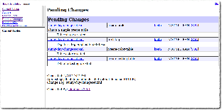
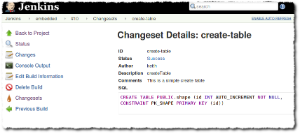

Plugin Information |
|---|
View Liquibase Runner on the plugin site for more information. |
Older versions of this plugin may not be safe to use. Please review the following warnings before using an older version:
Provides Liquibase build steps that evaluate liquibase changesets.
Important Upgrade Information
Version 1.2.0 now uses the Credentials Plugin to manage usernames and passwords to connect to the database. If you were using username & password configuration in the previous version of this plugin, be aware that credentials will be automatically created upon plugin update.
Features
Adds liquibase related operations (update, rollback, and dbdoc generation) as available build steps. See Liquibase documentation at http://www.liquibase.org.
Evaluated changesets and their details appear on the build's summary page.
Uses liquibase version 3.5.3.
|  |  |

|

|
Known Limitations
- Jenkins master will need to be able to connect to the target database. If, due to network constraints, your Jenkins slave node can initiate this connection but your Jenkins master cannot, consider the workaround described in JENKINS-41002, which uses port forwarding to facilitate database connectivity.
Installation
- Install the liquibase-runner plugin using Jenkins' plugin manager. Depending on how you use and configure the plugin, you may need to install a database server, and potentially your target schema.
- Once installed, three build steps are made available: "Evaluate liquibase changesets", "Generate Liquibase dbDoc", and "Rollback liquibase changes".
Common Configuration Amongst Builders
Simplest
By default, the plugin will use an instance of an H2 in-memory database, so you need only define the location of your changeset file. Note that changes won't be persisted across builds (though you may persist the H2 database to disk, see tips).
Advanced
Those who would like more control over liquibase configuration may do so using options presented when using the "advanced" section of the builder configuration. Here you'll find most of liquibase's configuration exposed, including contexts and the JDBC URL used to access the database.
For convenience, the plugin includes a few database drivers for use. Alternatively, you may also define a classpath where a database driver may be loaded, and the driver classname.
Note that individual configuration values will override any found in a defined liquibase properties file. This emulates how command-line usage of liquibase works.
Evaluate liquibase changesets step
Creating a job with this build step will run liquibase's update on the target database. Alternatively, by checking "Test Rollbacks", liquibase's updateTestingRollbacks is executed. Once a build has executed, details are provided about each changeset on the build summary.
Rollback liquibase changes step
The rollback build step invokes liquibase's "rollback" operation on the target database. There are a few rollback strategies to choose from that correspond to liquibase's rollback commands (by tag, by date, and by count).
This build step is intended for use when you're deploying to a real environment, and the need arises to undo a previous liquibase update.
DbDoc Generation
This build step generates Liquibase's dbDoc based on the supplied changelog. See liquibase documentation.
It is recommended to use this in conjunction with the HTMLPublisher plugin
Pipeline Support
All liquibase operations are available to pipeline scripts. See documentation for information and examples.
Job DSL Integration
See documentation regarding
how to use the JobDSL plugin to generate liquibase projects.
Usage Tips
- If you'd like to have only new changesets evaluated, consider using an H2 JDBC url like
"jdbc:h2:file:./data/sample". This instructs H2 to persist the database to a file. Note, however, if a different
build slave runs your project, that file will no longer be available, and all changesets will again be executed.
Version History
Version 1.3.0 (Feb 2, 2017)
- JENKINS-41681 Update plugin to use liquibase 3.5.3
- JENKINS-41655 liquibase runner causes 'schema_name()' error when used with jtds
- JENKINS-40963 Allow Liquibase runner to integrate with Job DSL plugin
Version 1.2.1 (Jan 9, 2017)
- JENKINS-40920 Credentials migration fails if project has more than one liquibase builder
- JENKINS-40919 Upgrading to 1.2.0 of the liquibase plugin may result in old-data warning
Version 1.2.0 (Jan 7, 2017)
- JENKINS-33401 Credentials Integration
- JENKINS-40816 Provide liquibase dbdoc generation build step
- JENKINS-40707 Pipeline Support
1.1.0 (Aug 30, 2016)
Thanks to David Siegal for suggestions, testing, and guidance for this release.
- JENKINS-37591 Upgraded to use Liquibase 3.5.1
- JENKINS-37700 Allow base path to be set.
- JENKINS-37699 Allow expressions in configuration fields
- JENKINS-37420 Added roll back build step
- JENKINS-37592 Tag on successful update.
- JENKINS-37637 Allow changesets to be loaded from classpath.
1.0.2 (May 4, 2016)
- Initial Release
{kind=link}
{kind=link}
{kind=link}
{kind=link}